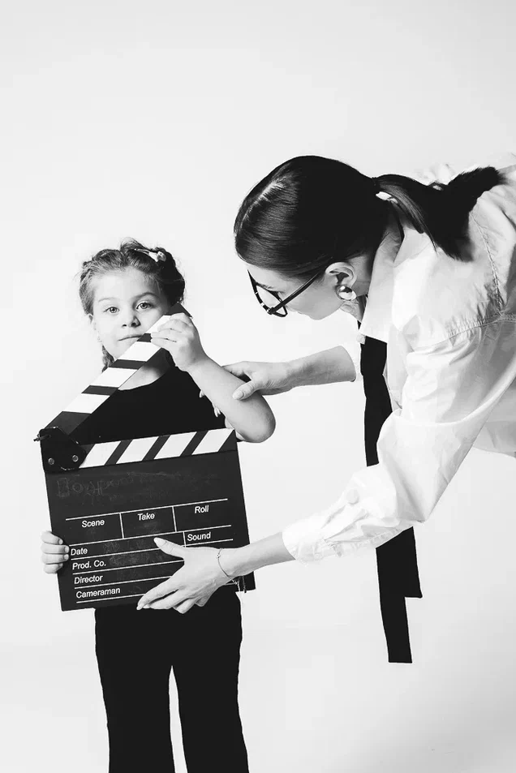

ПОДГОТОВИТЕЛЬНЫЙ
КУРС КИНОИНДУСТРИИ
Игровая форма, первые шаги в кадре и на сцене, раскрытие через творчество.
КИНОШКОЛА · СОЧИ
Погружаем в мир кино, сцены и медиа. Учим раскрывать себя, работать в кадре и создавать проекты, которыми хочется делиться. Дети от 3 до 17 лет и взрослые 18+.

01 / О НАС
Киношкола — это место, где творчество становится профессией и образом жизни. Мы работаем с детьми от 3 до 17 лет и взрослыми от 18 лет.
У нас есть образовательная лицензия, мы готовим к реальной сцене и съёмкам, а не просто «занимаем время». Наши ученики выступают на главных площадках страны и снимаются в кино.
01.1 / ФОРМАТЫ ОБУЧЕНИЯ
Формат киношколы работает для детей от 3 до 17 лет и для взрослых от 18 лет.
Игровая форма, первые шаги в кадре и на сцене, раскрытие через творчество.
После 3 лет обучения и сдачи аттестации — свидетельство. После 7 лет — диплом.
«Эйфория» и «Вся жизнь — театр». Профессиональная подготовка к кастингам и работе в кадре.
02 / НАПРАВЛЕНИЯ
Пять направлений, чтобы попробовать себя по разные стороны камеры и сцены. Нажмите на карточку, чтобы раскрыть описание.
Камера, эмоции, импровизация и работа с образом.
↗Как рождается кино — от идеи и сценария до съёмки.
↗Вокал и хореография — голос, тело и сцена.
↗Речь, подача, интервью и работа перед аудиторией.
↗Контент, съёмка, блогинг и современные медиапроекты.
↗01 / АКТЁРСКОЕ МАСТЕРСТВО
Учим проживать роль, управлять эмоциями и телом, работать в партнёрстве. Для детей — в игровой форме, но с реальным выходом на съёмки и сцену. Для взрослых — профессиональная подготовка к кастингам и работе в кадре.
Тренинги, этюды, импровизации, разбор ролей, репетиции, выход на сцену.
Ребёнок раскрывается, взрослый осваивает профессию. Ученики снимаются в кино и выступают на площадках.
Возраст: от 3 лет
02 / КИНОПРОДАКШН
Взгляд изнутри на создание кино. Учим придумывать идею, писать сценарий, работать с кадром, светом и монтажом.
Разбор кино и рекламы, сценарий, раскадровка, съёмки, монтаж, разбор работ.
Ученик создаёт собственные видео и понимает полный цикл производства.
Возраст: от 11 лет
03 / ЭСТРАДНОЕ НАПРАВЛЕНИЕ
Синтез голоса и тела. Учим петь, двигаться и существовать на сцене целостно.
Распевки, работа над песней, хореографические связки, постановка номеров, выступления.
Ученик выходит на сцену с готовым номером и не боится публики.
Возраст: от 3 лет
04 / МАСТЕРСТВО ТЕЛЕ- И РАДИОВЕДУЩЕГО
Техника речи, работа в кадре и в эфире, импровизация.
Речевые тренинги, работа с текстом, запись эфиров, разбор, импровизации.
Ученик уверенно говорит на камеру, в микрофон и в жизни.
Возраст: от 6 лет
05 / МЕДИА И РЕКЛАМА
Учим презентовать себя и создавать контент. Личный бренд, работа с камерой, фотопозирование, основы рекламы.
Съёмки, фотопозирование, создание контента, работа над образом, разбор кейсов.
Ученик умеет показать себя и имеет портфолио.
Возраст: от 3 лет
Мы не готовим только актёров или только блогеров. Мы создаём среду, в которой ребёнок пробует себя в разных ролях и собирает свой уникальный набор навыков: от умения говорить и двигаться до умения придумывать, снимать и презентовать.
Актёрское мастерство даёт смелость. Кинопродакшн — взгляд автора. Эстрадное направление — голос и тело. Мастерство ведущего — уверенность в речи. Медиа и реклама — умение показать себя миру.
Вместе это не пять кружков, а одна система — всестороннее развитие через творчество.
Записаться на пробное занятие ↗02.1 / НАШИ РЕЗУЛЬТАТЫ
Кадры со съёмок и выступлений, названия проектов и площадок, отзывы родителей и учеников.
«Ребёнок стал уверенным, перестал бояться камеры. Уже снялся в двух проектах.»
— родитель ученика
«Здесь не просто занятия — здесь настоящая команда и реальная практика.»
— ученица школы
03 / МЕДИА
Добавьте сюда главное видео из папки «съемки каникулы по-нашему» или «отчетник». Большой видеоблок специально оставлен акцентным.
Открыть медиаматериалы ↗ГОТОВЫ НАЧАТЬ?
05 / FAQ
Мы работаем с детьми от 3 до 17 лет и взрослыми от 18 лет. Для детей 3–8 лет — подготовительный курс киноиндустрии, с 8 лет — система «База + Профиль».
Предварительный опыт не обязателен. Важны интерес, желание развиваться и готовность пробовать новое.
Оставьте заявку через форму. Мы свяжемся с вами и расскажем о ближайшем наборе и формате знакомства.
Да, образовательная деятельность подтверждена документально.
Да. Ученики снимаются в кино и рекламе, выступают на главных площадках страны.
Да. Для взрослых есть курсы «Эйфория» и «Вся жизнь — театр» — профессиональная подготовка к кастингам и работе в кадре.
После 3 лет обучения и сдачи аттестации выдаётся свидетельство, после 7 лет — диплом.
Свидетельство после 3 лет обучения и аттестации, диплом — после 7 лет.
Сочи, ул. Ясногорская, 16/7.
Позвоните по номеру 8 (993) 306-84-78 или напишите нам в одной из социальных сетей.
06 / КОНТАКТЫ
Сочи, Ясногорская 16/7
Часы работы: уточняйте у администратора